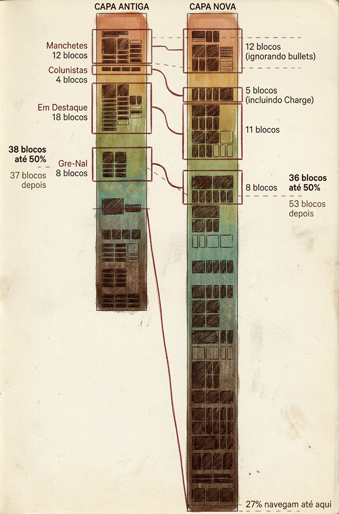
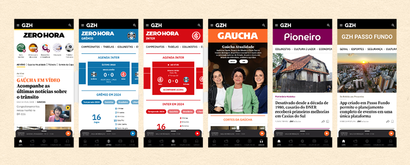

01Contexto
Em 2023, GZH tinha 120 mil assinantes pagos e um problema de identidade. Uma pesquisa com 1.228 pessoas mostrou que os usuários ainda chamavam GZH de "o site da Zero Hora" ou "o site da Gaúcha". A marca criada da fusão não havia conquistado espaço próprio, e as marcas originais, com décadas de credibilidade, estavam sendo ofuscadas.
"Pra mim ainda é Zero Hora. Mas fico tentando me lembrar de chamar de GZH."
Com os 60 anos de Zero Hora chegando em 2024, o desafio era reposicionar GZH como um hub de jornalismo: uma casa que abriga marcas fortes em vez de competir com elas.
02Processo
Foram 8 meses de trabalho com mais de 40 pessoas entre negócio, consultoria, produto, tecnologia, marketing e redação. Tratei o redesign como oportunidade dupla: além de resolver o problema de marca, reescrevemos todos os componentes da capa dentro da lógica do design system, consolidando uma base que antes era fragmentada.

A capa original de 2017 usava 3 colunas principais separando hard news, soft news e conteúdo exclusivo. Em 2020 ganhou cortes horizontais. Em 2024 fizemos a virada definitiva: a capa passou a ser estruturada ao redor de linhas de conteúdo, otimizada tanto para mobile quanto para desktop.
03Decisões e tradeoffs
- GZH virou a moldura, não a protagonista. A marca passou a ser a barra preta no topo, abraçando o conteúdo abaixo. Zero Hora recuperou o papel de credibilidade histórica e Gaúcha o de proximidade e ao vivo. O sistema também passou a acomodar bem as demais marcas do grupo.
- Troquei o grid de 16 colunas por um de 6. Menos flexibilidade teórica, muito mais consistência real entre breakpoints e componentes.
- Equilibrei liberdade editorial e limites técnicos. A redação precisava de autonomia para montar a capa a cada momento do dia, dentro das diversas limitações do CMS. Cada componente foi desenhado para funcionar nos dois mundos.
- Reescrever tudo custou tempo, e valeu. Todos os componentes da capa foram refeitos dentro do design system, o que estendeu o prazo mas eliminou dívidas que travavam a evolução do produto.
04Resultado
- Maior engajamento na homepage, com aumento do tempo gasto e da profundidade de navegação
- Pesquisa com 2.392 visitantes confirmou a aprovação do novo visual e o fortalecimento das marcas Zero Hora e Gaúcha
- Crescimento consistente de assinaturas nos meses seguintes, com vendas recordes em novembro do mesmo ano
- Hoje, em 2026, são mais de 200 mil assinantes digitais
"Ver ZERO HORA em letras grandes me traz uma certa nostalgia e uma sensação de credibilidade."
O redesign não apenas modernizou a experiência. Ele devolveu às marcas o lugar que elas nunca deveriam ter perdido, e o negócio respondeu.
